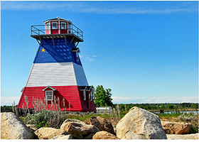
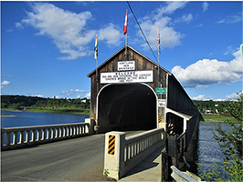
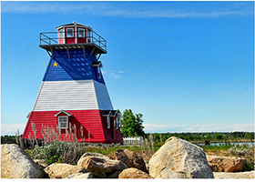
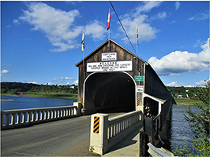

Welcome to New Brunswick
New Brunswick is a relaxed, beautiful place on Canada’s east coast. It’s known for fresh ocean air, stunning nature, and friendly people. If you’re looking for a trip that feels calm, welcoming, and full of natural beauty, you’ll love it here.
If you’re planning a visit or just curious about this Maritime gem, here are the top three things that define New Brunswick:
- Experience the world’s highest tides at Hopewell Rocks
- Discover Acadian culture in Canada’s only official bilingual province
- Visit Hartland, home to the world’s longest covered bridge
Gallery
 



Looking for more information on the wonders of New Brunswick?
Visit New Brunswick virtually at #ExplorNB!